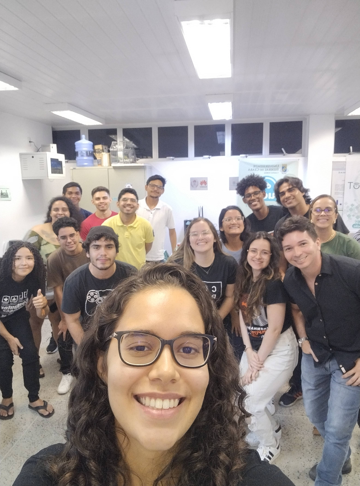
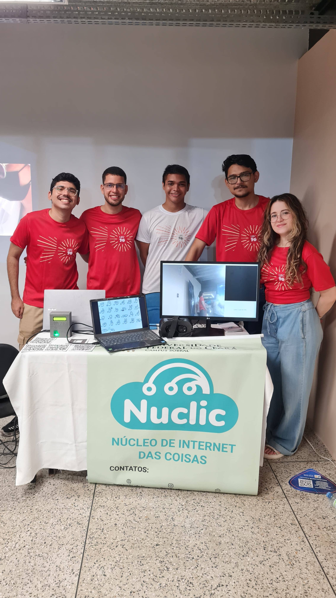
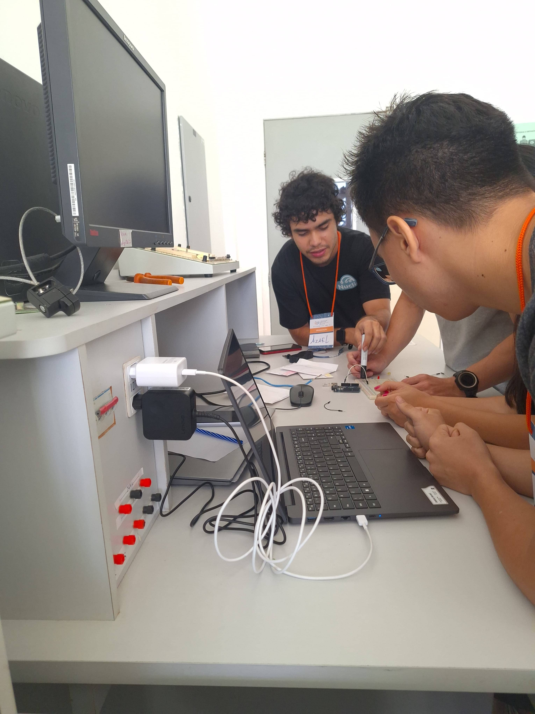

Onde a curiosidade vira prática
O Nuclic nasce no ambiente universitário com uma proposta clara: transformar conhecimento em experiências concretas, aproximando estudantes, professores e parceiros de desafios reais da tecnologia.
Sobre Nós
O Nuclic é o Laboratório de Sistemas de Computação vinculado ao curso de Engenharia da Computação da UFC Campus Sobral. Aqui, pesquisa, desenvolvimento e extensão caminham juntos para transformar ideias em soluções tecnológicas com aplicação real.
Nossa trajetória
O Nuclic nasce no ambiente universitário com uma proposta clara: transformar conhecimento em experiências concretas, aproximando estudantes, professores e parceiros de desafios reais da tecnologia.
Mais do que estudar tendências, o laboratório investiga como IoT, inteligência artificial, robótica e computação distribuída podem resolver problemas do mercado, da indústria e da sociedade.
Cada projeto, oficina e evento também é um espaço de formação. O Nuclic ajuda a desenvolver repertório técnico, visão crítica e autonomia para quem quer construir tecnologia com propósito.

Vivência universitária

Ações e inaugurações

Aulas e formação
Missão
Promover pesquisa de qualidade, desenvolver soluções tecnológicas de vanguarda e formar profissionais capazes de responder aos desafios do presente com visão de futuro.
Visão
Consolidar o Nuclic como um polo de inovação reconhecido pela sua capacidade de descentralizar ciência, ampliar oportunidades e gerar impacto regional e nacional.
Pilares
Investigamos arquiteturas, protocolos e tecnologias emergentes que antecipam as demandas de cidades inteligentes, saúde conectada e indústria digital.
Traduzimos teoria em sistemas úteis, integrando hardware, software e conectividade para criar protótipos, consultorias e parcerias aplicadas.
Promovemos minicursos, workshops e experiências práticas que fortalecem a formação acadêmica e aproximam novos talentos da inovação.
Compartilhamos conhecimento em mostras, feiras e iniciativas como a ExpoIoT para tornar a tecnologia mais acessível, visível e colaborativa.
Especialidades
Internet das Coisas (IoT) e redes sem fio de baixo consumo
Inteligência Artificial aplicada à análise e automação
Robótica e sistemas embarcados para prototipagem prática
Computação em nuvem e de borda para processamento distribuído
Conectividade com LoRa, LoRaWAN, Wi-Fi, Bluetooth, Zigbee e VLC